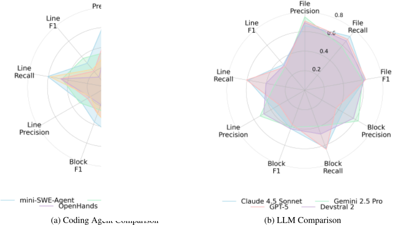
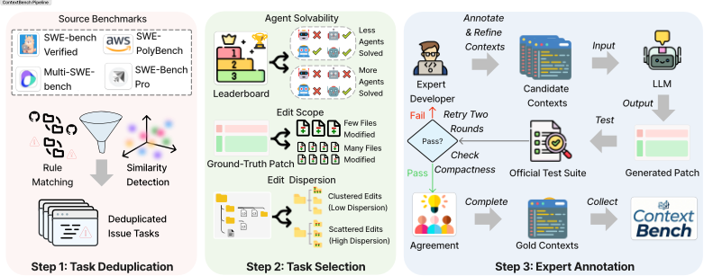
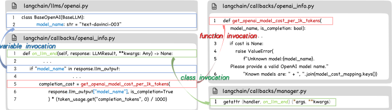
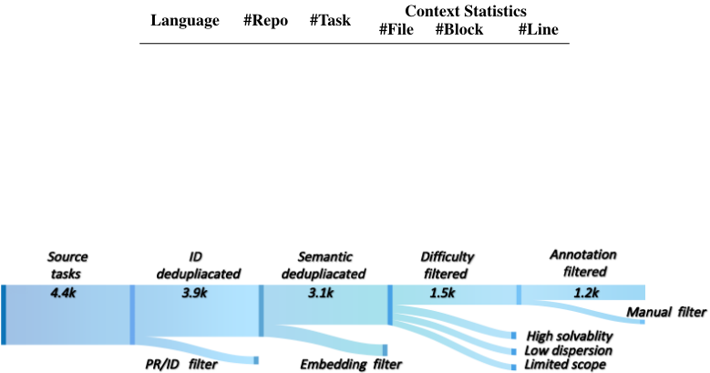
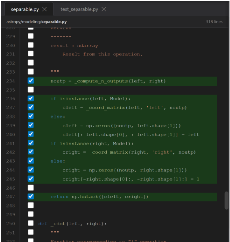
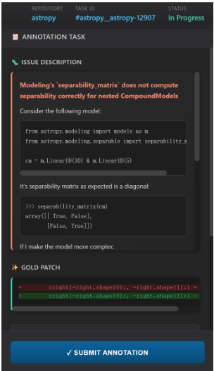
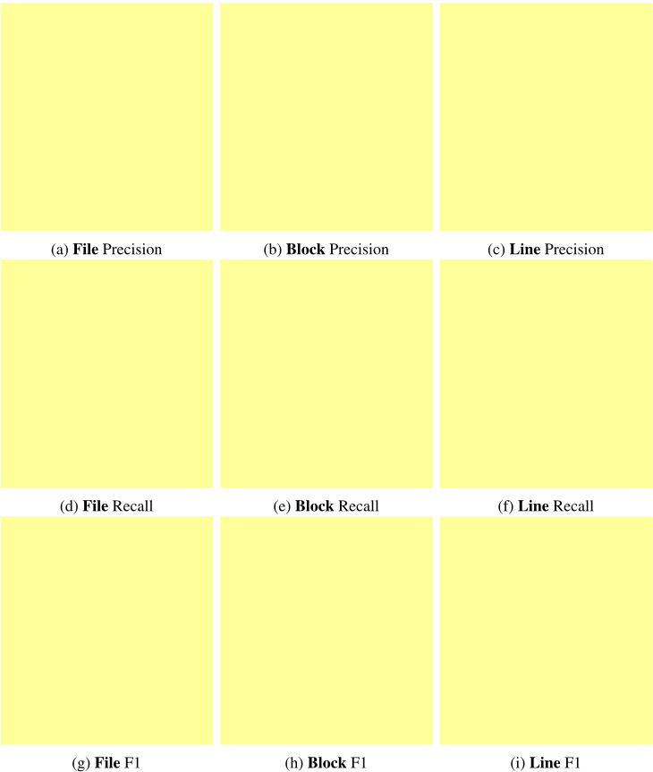

ContextBench：面向 Coding Agent 上下文检索的评测基准
现有 SWE-bench 类基准只衡量最终补丁是否通过测试，无法揭示 coding agent 在解题过程中如何检索与使用代码上下文，高成功率可能来自试错或对测试用例的过拟合。论文构建了 CONTEXTBENCH：从四个主流基准采样任务，经去重与难度筛选后，由专家以 human-in-the-loop 方式标注 gold context，并用 GPT-5 仅凭该上下文生成补丁通过官方测试套件来验证其充分性；再借助 tree-sitter 将 gold 与 agent 上下文对齐到 file/block/line 三级粒度，计算 recall/precision/F1 及 AUC-Cov、冗余度、evidence drop 等过程级指标。对 4 个前沿 LLM 与 5 个 coding agent 的评测显示：复杂 scaffolding 相比简单 shell 检索基线收益有限（'The Bitter Lesson'），LLM 普遍重 recall 轻 precision，且检索到的上下文与最终实际使用的上下文之间存在显著落差；检索轮数与粒度平衡的策略（如 Claude Sonnet 4.5）在效果与成本上更优。该工作为团队提供了超越端到端通过率的过程级评测范式与可复用的度量方法。
现有 SWE-bench 等端到端基准只关注最终任务成功率（如 Pass@k），忽略了 coding agent 在大规模代码库中如何检索和使用关键代码上下文；缺乏对中间上下文的验证，高成功率可能来自试错或对特定测试用例的过拟合，导致 agent 在实际场景中不可靠。论文核心问题是：LLM Agent 在解决软件工程任务时如何检索和使用关键代码上下文。
构建 CONTEXTBENCH 基准与自动化评测框架。基准构建分三步：(1) 任务去重——对来自 SWE-bench Verified、Multi-SWE-bench、SWE-PolyBench PB500、SWE-bench Pro 的 4,497 个任务做规则匹配与 embedding 语义相似度去重；(2) 任务选择——按 agent solvability、edit scope、edit dispersion 三个难度指标筛选出 1,136 个挑战性任务；(3) 专家标注——标注者从 gold patch 出发追踪函数/类调用、继承关系与控制流/数据流依赖，标注 gold context，用 GPT-5 仅凭标注上下文生成多个候选补丁、至少一个通过官方测试套件即判定充分，再由另一标注者做紧凑性检查并达成共识。评测框架通过插桩记录 agent 轨迹中访问的所有代码区域（结构化为 <PATCH CONTEXT> 块，并要求提交前显式声明所用上下文），用 tree-sitter 将 gold 与 agent 上下文映射到统一的 file/block/line 坐标系，基于区间重叠计算 recall/precision/F1，并定义 AUC-Cov（覆盖效率）、逐步冗余度、evidence drop（已探索 gold 证据未保留到最终补丁的比例）等过程级指标。
CONTEXTBENCH 包含 66 个仓库、8 种编程语言的 1,136 个 issue 任务，标注了 522,115 行人工验证的 gold context，覆盖 4,548 个文件中的 23,116 个类与函数；另构建 500 任务的 Lite 子集。
SOTA LLM 在标准 scaffolding 下上下文检索质量有限：block 级 F1 均低于 0.45，line 级 F1 均低于 0.35。
五个 coding agent 中，更复杂的检索 scaffolding（embedding 检索、专用文件系统接口、图检索）整体上下文指标常低于简单 bash 命令基线 mini-SWE-agent，表明当前 agent 设计可能过度工程化。
检索模式差异显著：GPT-5 每实例仅 5.87 轮检索、每步平均 119.29 行；Devstral 2 达 22.16 轮、每步仅 11.98 行（约为 GPT-5 的 10%）且因输出 token 最多而成本最高；Claude Sonnet 4.5 的平衡策略取得最佳 line 级 F1 与 Pass@1。
所有被评测 agent 均出现一致的上下文使用落差：大量中间步骤已检索到的 gold 相关代码未保留到最终补丁生成中，Gemini 2.5 Pro 与 Devstral 2 丢失最严重，可能解释其较低的解决率。
gold context 稳健性：对 82 个含两个语义等价补丁的任务，上下文间平均 Jaccard 相似度为 0.9518（平均距离 0.0482），支持标注可靠性。
上下文 recall 与下游 Pass@1 正相关，说明检索质量是端到端性能的有效预测信号；平衡检索频率与粒度的模型以更低成本获得更高 Pass@1，激进检索主要增加 token 消耗。
区别于 SWE-bench 等结果导向（outcome-driven）基准，CONTEXTBENCH 是面向过程（process-oriented）的 coding agent 上下文检索评测：引入人工验证的 gold context 作为中间监督信号，在 file/block/line 三级粒度上自动量化检索质量，并新增轨迹级动态指标（AUC-Cov、冗余度、evidence drop）刻画检索过程而非仅最终结果；同时通过多解补丁下的 Jaccard 一致性分析验证 gold context 的稳健性，填补了轨迹分析类工作难以标准化、只做事后解释的空白。
相关度级别：high
命中能力域：3.1 上下文工程与记忆 | 3.3 Agent 架构与工具使用 | 3.5 评测与可靠使用
理由：论文直接命中团队三个核心能力域。3.1 上下文工程与记忆：代码库上下文的检索、组织与使用正是上下文工程的核心生产场景，论文给出可复用的 gold context 标注流程与三级粒度度量方法；3.3 Agent 架构与工具使用：系统对比五种 agent harness（mini-SWE-agent、SWE-agent、OpenHands、Agentless、Prometheus）的检索行为，直接回答'复杂 scaffolding 是否值得投入'这一 harness 设计问题，结论是简单基线已能恢复大量必要上下文；3.5 评测与可靠使用：提供超越端到端通过率的过程级评测范式、成本效率分析与数据污染警示。核心结论（复杂 scaffolding 边际收益有限、recall-precision 权衡、检索-使用落差）对团队构建内部 coding agent、诊断'看到了但没用上'的失败模式、控制检索成本均有直接指导价值。
建议动作：深入精读并做内部分享
arXiv:2602.05892v3 [cs.LG] 2026年2月11日
1 1 ∗ 1 ∗ 1 ∗ 1 2
Earl T. Barr 2 Federica Sarro 2 Zhaoyang Chu 2 † He Ye 2
Han Li Letian Zhu Bohan Zhang Rili Feng Jiaming Wang Yue Pan †
1 南京大学 2 伦敦大学学院
基于大语言模型（LLM）的编码 Agent 在自动化 issue 解决基准测试（benchmark）上已展现出强劲性能，然而现有评估大多聚焦于最终任务的成功与否，对 Agent 在解决问题过程中如何检索和使用代码上下文的洞察十分有限。我们提出了 CONTEXTBENCH，一种面向过程的编码 Agent 上下文检索评估方法。CONTEXTBENCH 包含来自 66 个代码仓库、横跨八种编程语言的 1,136 个 issue 解决任务，每个任务均附有人工标注的 gold 上下文。我们进一步实现了一个自动化评估框架，该框架跟踪 Agent 轨迹，并在整个 issue 解决过程中度量上下文召回率、精确率与效率。利用 CONTEXTBENCH，我们评估了四个前沿 LLM 和五个编码 Agent。我们的结果表明：复杂的 Agent 脚手架（scaffolding）在上下文检索方面仅带来微小的收益（编码 Agent 的“苦涩教训”（The Bitter Lesson））；LLM 一贯偏好召回率而非精确率；且已探索的上下文与实际利用的上下文之间存在显著差距。CONTEXTBENCH 通过提供能够揭示 issue 解决过程的中间 gold 上下文指标，对现有端到端 benchmark 形成了补充。这些上下文为引导 LLM 在软件任务中的推理提供了有价值的中间信号。
以 SWE-agent [26]、OpenHands [23] 和 Agentless [24] 为代表的大语言模型（Large Language Model, LLM）编码 Agent，近来在真实世界的软件工程任务中展现出强大的能力，包括缺陷修复 [12, 18]、功能实现 [20, 8]，以及与基于终端的执行环境进行交互 [15]。这些 Agent 是能够进行多步推理和工具调用的自主系统，使其能够在真实开发场景中解决复杂的、仓库规模的任务。
现有基准测试（benchmark）的局限性。该领域的进展通常在 SWE-bench [12]、SWE-bench Pro [9] 等基准测试上进行评估，这些基准测试从真实世界的 GitHub issue 中整理任务，并要求 Agent 提交经测试套件验证的补丁。然而，这些基准测试优先关注端到端的任务成功率（例如 Pass@k），而忽略了编码 Agent 是如何得出其解决方案的。尤其是，它们忽视了对从大型代码库中检索到的上下文的评估，而这类上下文正是 Agent 推理的基础。在不验证中间上下文的情况下，较高的成功率可能源于反复试错或对特定测试用例的过拟合，从而产生在实际场景中不可靠的编码 Agent。因此，我们主张建立一种基于上下文的评估体系，以打开软件任务的黑箱，并回答如下关键问题："LLM Agent 在解决软件工程任务时，是如何检索并使用关键代码上下文的？"
∗ 这些作者贡献相同，为共同第二作者。
† 通讯作者。Email: { he.ye, zhaoyang.chu.25 } @ucl.ac.uk
预印本。

CONTEXTBENCH：超越端到端的基准测试。为回答这一问题，我们开发了一条半自动化流水线，用于整理 Gold Context（黄金上下文），其定义为：由专家开发者认定、为解决给定 issue 所必需的仓库工件的标准集合。我们首先从四个广泛使用的基准测试中采样高质量任务，即 SWE-bench Verified [12]、Multi-SWEbench [29]、SWE-PolyBench PB500 [20] 和 SWE-bench Pro [9]。在通过基于规则的匹配和基于嵌入的相似性检测完成去重之后，我们依据三项难度指标筛选出具有挑战性的任务，即 Agent 可解性（agent solvability）、编辑范围（edit scope）以及基于 gold patch 的编辑分散度（edit dispersion）。对于每个被选中的任务，人类专家在人在回路（human-in-the-loop）流程中迭代地标注并完善所需上下文，从而确保为 issue 解决提供紧凑且充分的 gold 上下文。
在此流程的基础上，我们提出了 CONTEXTBENCH——一个大规模的基准测试（benchmark），旨在评估编码 Agent 在软件工程任务中的上下文检索能力，使我们能够超越传统的端到端 issue 解决指标，对 Agent 行为进行细粒度分析。CONTEXTBENCH 包含来自 8 种编程语言、66 个代码仓库的 1,136 个 issue 解决任务。这些任务标注有 522,115 行经人工验证的 gold 上下文，涵盖 4,548 个文件中的 23,116 个类和函数。为便于高效评估，我们还根据任务难度划分出一个包含 500 个任务的 Lite 子集。
我们进一步提出了一个自动化评估框架，其中包含一套系统化的指标，用于评估 LLM Agent 在问题求解过程中检索代码上下文的有效程度。这些指标在任务解决的不同阶段评估代码上下文的召回率与精确率，与最终成功率形成互补。具体而言，我们对 Agent 的轨迹进行插桩，记录其检查过的所有代码区域。随后，我们利用 tree-sitter 3 工具解析相应的代码仓库，并将 gold 上下文和 Agent 上下文映射到一个共享坐标系上，该坐标系记录了它们的文件路径、AST 块和行范围。基于这一对齐，我们利用区间重叠在三个粒度上计算召回率、精确率和 F1：文件级、块级和行级。图 1 总结了四个 LLM 和五个编码 Agent 在 CONTEXTBENCH 上的结果，凸显了不同模型与 Agent 之间检索行为的系统性差异。
核心要点。我们对四个最先进的大语言模型（LLM）进行了基准测试（benchmark），包括 GPT-5 [22]、Claude Sonnet 4.5 [1]、Gemini 2.5 Pro [7] 和 Devstral 2 [17]，以及五个广泛使用的编码 Agent，包括 mini-SWE-agent、SWE-agent [26]、OpenHands [23]、Agentless [24] 和 Prometheus [6]。我们的分析揭示了若干关键发现：❶ 复杂的脚手架并不一定带来更好的上下文检索性能。如图 1a 所示，在这五个编码 Agent 中，更复杂的检索脚手架并不总是优于简单的基线，这暗示可能存在过度设计，并与人工智能（AI）研究中的“苦涩教训”（The Bitter Lesson）相呼应。❷ CONTEXTBENCH 对最先进的 LLM 具有挑战性。最先进的 LLM 难以检索出有效的代码上下文，它们往往在覆盖相关信息的同时引入大量噪声，从而损害检索精确率，如图 1b 所示。❸ LLM 在上下文检索中更偏好召回率而非精确率。所有被评估的 LLM 都会检索宽泛的上下文以最大化覆盖范围，从而引入大量噪声，而精确率和 F1 的增益却十分有限。❹ 平衡的检索能同时提升性能与成本效率。在检索频率与上下文粒度之间取得平衡的模型能以更低的成本取得更高的 Pass@1，而激进的检索则主要增加 token 消耗。❺ 检索到的上下文与实际利用的上下文之间存在显著差距。Agent 常常会查看与 gold 相关的代码，却未能在最终补丁生成中保留或使用这些代码，这凸显了整合是关键瓶颈。
3 https://tree-sitter.github.io/tree-sitter/
贡献。总而言之，我们的工作提供了以下三项关键贡献：
如图 2 所示，我们提出了 CONTEXTBENCH——一个用于评估 Agent 在软件工程任务中上下文检索能力的基准测试（benchmark），其通过三个关键步骤精心构建而成：（1）任务去重（Task Deduplication）。我们从多个 issue 解决类基准测试中汇集任务，并通过基于规则和基于嵌入（embedding）的检测方法消除完全重复与近似重复的任务。（2）任务选择（Task Selection）。我们依据三项难度指标筛选具有挑战性的任务，即 Agent 可解性、真值补丁（ground-truth patch）中编辑的范围与分散度，并优先选择那些较为复杂或现有 Agent 仍未解决的任务。（3）专家标注（Expert Annotation）。对于每个被选中的任务，专家开发者在人在回路（human-in-the-loop）流程中，通过从真值补丁出发追踪必要的代码依赖，迭代式地标注 gold 上下文。随后，我们通过评估仅以该上下文为条件的大语言模型（LLM，例如 GPT-5）能否生成通过官方测试套件的补丁，或该上下文是否达到较高的标注间一致性，来验证每个标注得到的上下文。基于这一流程，我们共收集了 1,136 个带有经验证 gold 上下文的任务实例，覆盖 66 个代码仓库和 8 种编程语言。
我们通过从四个广泛使用的议题解决（issue resolution）基准测试（benchmark）中系统性地采样任务来构建 CONTEXTBENCH，即 SWE-bench Verified [12]（500 个任务）、Multi-SWE-bench [29]（1632 个任务）、SWEPolyBench PB500 [20]（500 个任务）和 SWE-bench Pro [9]（1865 个任务），共计 4,497 个任务。这些 benchmark 提供了从真实世界 GitHub 仓库和议题中精选而来的高质量任务来源，具有很强的可复现性保证，并实现了对 Python、Java、JavaScript、TypeScript、Go、Rust、C 和 C++ 的多语言覆盖。
这些源 benchmark 均来自 GitHub，不同仓库之间可能存在相互重叠的任务。为确保唯一性，我们对任务元数据（例如仓库名称和议题标识符）应用基于规则的匹配来消除完全重复的任务，得到 3,981 个任务。我们进一步计算议题描述之间基于嵌入（embedding）的语义相似度，并移除高于预设阈值（例如 0.9）的近似重复项。最后，我们人工检查被该阈值标记出的边界情况以避免误删，最终得到 3,100 个唯一任务。这一去重步骤确保 CONTEXTBENCH 中的每个任务都对应一个不同的真实世界议题，从而将冗余评估带来的偏差降至最低。更多实现细节见第 A 节。

为确保 CONTEXTBENCH 评估的是具有挑战性且非平凡的上下文检索场景，我们采用三个互补的难度指标对候选任务进行排序，即 Agent 可解性、真实补丁（ground-truth patch）中编辑的范围与分散度。
Agent 可解性（Agent Solvability）。我们自动抓取源基准测试公开排行榜中的结果，并将其作为任务难度的粗略代理指标。对于每个任务，我们记录成功解决该任务的 Agent 数量，并优先选择尚未被解决或仅被少数 Agent 解决的任务。
编辑范围（Edit Scope）。对于每个议题任务，我们分析其真实补丁并记录被修改文件的数量。我们优先选择编辑范围较大的任务，因为这类任务通常需要更广泛的上下文检索，并涉及更复杂的推理模式。
编辑分散度（Edit Dispersion）。我们衡量代码编辑在仓库中各文件与目录之间的分布情况。为量化这一指标，我们计算由 Tree-Sitter 解析得到的仓库树中被编辑区域之间的平均结构距离。我们优先选择编辑高度分散、跨越多个模块或相距较远文件的任务，因为这类情况涉及对分散代码区域更广泛的上下文依赖。
基于这些难度指标，我们选出 1,500 个候选任务。随后我们对其进行人工审查，以剔除那些在指标上看似困难但在语义上却很平凡的情况，例如跨多个文件的大规模变量重命名，或是不影响程序逻辑的批量格式修改，最终得到 1,136 个任务。更多实现细节见附录 B。
标注工作由本文的六位作者与一组深度参与的专家开发者协作完成，历时四个月。为确保质量与一致性，我们采用人在回路（human-in-the-loop）的流程：标注者针对所选的 1,136 个任务迭代式地构建并完善黄金上下文（gold context），并通过基于大语言模型（LLM）的补丁生成和标注者间一致性检查对其进行验证。所有标注者均拥有三年以上处理大规模代码库的软件开发经验。为确保标注者能够熟练地标注数据，我们提供了详细的指南和示例，说明如何追踪代码依赖、识别相关工件（artifact），并以标准化格式记录标注。我们还制定了明确的准则和任务要求，以便在整个过程中为标注者提供指导。有关我们标注流程的详细信息，请参见第 F 节。
3 https://github.com/langchain-ai/langchain/pull/4009

上下文标注。标注过程从每个 issue 任务的真实补丁（ground-truth patch）开始。标注者遵循所提供的指南，追踪源自被修改区域的关键代码依赖和语义相关工件。对于每个被编辑的位置，他们检查其函数与类调用、继承关系，以及相关的控制流和数据流路径。标注者还会审查同一文件或模块内的周边代码，以识别与该修改语义相关的组件。通过这一追踪过程，标注者被要求确保所记录的上下文足以解决相应 issue，同时通过排除冗余或无关代码，使其尽可能紧凑。
上下文验证。为验证每个标注上下文是否足以解决其对应的 issue，我们采用最先进的 LLM（例如 GPT-5）作为评估器。对于每个任务，模型仅以标注的上下文作为条件，并被提示生成多个候选补丁（例如 5 次尝试）。如果至少有一个生成的补丁成功通过官方测试套件（包括 fail-to-pass 和 pass-to-pass 两类测试用例），我们就认为该标注上下文是充分的。详细的原理依据与协议见第 G 节。
上下文精炼。当某个标注上下文通过验证后，我们将其分配给另一位标注者（不同于执行初始标注的标注者）进行紧凑性检查。这位二次标注者会审查已验证的上下文，识别并移除任何冗余或与 issue 解决无关的代码段。随后，两位标注者共同审查更新后的上下文，解决任何分歧，并最终确定黄金上下文的共识版本。
如果某个已标注的上下文未通过验证，我们会再进行两轮额外的标注与验证，每轮由不同的标注员负责。在每一轮中，新的标注员通过独立追踪代码依赖来识别上下文，随后按照前文所述的基于 LLM 的验证流程对其进行验证。这一迭代过程考虑到了这样一种可能性：某些任务本身对 LLM 而言就难以解决，而不一定是由于上下文标注不完整。在这两轮额外标注之后，三位标注员共同检查所得的上下文，协调分歧，并将其完善为最终的上下文版本。
因此，标注过程最终产出一个黄金上下文（gold context），它由一组紧凑的代码区域表示，这些区域对于解决问题并生成相应补丁至关重要，如图 3 所示。这种协作式的完善确保 CONTEXTBENCH 中的每个黄金上下文既在语义上足以解决问题，又尽可能简洁。
图 4 展示了数据过滤流水线，说明了任务如何经过去重、筛选和专家标注的处理。该流水线最终产出 CONTEXTBENCH——一个以人工验证的黄金上下文为特色的仓库级基准测试。如表 1 所总结，CONTEXTBENCH 包含 66 个仓库和 1,136 个跨八种编程语言的 issue 任务，上下文标注在文件、代码块和行三个层级提供，共涵盖 4,548 个文件、23,116 个代码块和 522,115 行代码。这些黄金上下文使得能够在最终任务解决率之外，对中间阶段的上下文检索进行系统性评估。为便于高效评估，我们进一步构建了一个包含 500 个任务的 Lite 子集，其选取依据是编码 Agent 的可解性以及真实补丁中编辑的范围和分散程度。
| 0 | 1 | 2 | 3 | 4 | 5 |
|---|---|---|---|---|---|
| Language | #Repo | #Task | Context Statistics | Context Statistics | Context Statistics |
| Language | #Repo | #Task | #File | #Block | #Line |
| 0 | 1 | 2 | 3 | 4 | 5 |

To evaluate the context retrieval ability of coding agents, we instrument their execution to trace the code regions they inspect during issue resolution and subsequently compare their retrieved contexts with human-verified gold contexts.
Agent Context Tracing. For each issue task, we instruct the agent to perform the full resolution process while automatically recording every accessed code segment, including the corresponding file path, line range, and content. We then apply regular expressions to extract these regions and standardize them into structured <PATCH CONTEXT> blocks, which serve as intermediate checkpoints representing the agent's context snapshots throughout its execution trajectory. Moreover, we require the coding agent to explicitly declare, before submitting its final patch, the code context it considers essential for generating the patch. This final declared context may not completely overlap with the intermediate checkpoint contexts, as it reflects the agent's own judgment of what information is most relevant to the patch. More implementation details are provided in Section C.
Agent Context Evaluation. We then parse the entire repository with the tree-sitter tool to construct a unified structural coordinate system, onto which both the gold and agent contexts are mapped for comparison. The two context sets are aligned across three granularities: (i) the file level, by matching file paths; (ii) the block level, by aligning Abstract Syntax Tree (AST) nodes at definition level, including classes, functions, interfaces, and trait declarations (detailed in Section E); and (iii) the line level, by comparing line ranges using their byte offsets within files. This structured alignment enables fine-grained comparison between the gold and agent contexts. Based on this alignment, we evaluate recall, precision, F1, and process-level context dynamics ( e.g. , efficiency, redundancy, and usage) at the file, block, and line levels, with detailed definitions provided in Section H.
| Coding Agent.Coding Agent | File-Level.Recall ↑ | File-Level.Precision ↑ | File-Level.F1 ↑ | Block-Level.Recall ↑ | Block-Level.Precision ↑ | Block-Level.F1 ↑ | Line-Level.Recall ↑ | Line-Level.Precision ↑ | Line-Level.F1 ↑ | Pass@1 ↑.Pass@1 ↑ |
|---|---|---|---|---|---|---|---|---|---|---|
| mini-SWE-Agent | 0.682 | 0.709 | 0.634 | 0.645 | 0.369 | 0.375 | 0.606 | 0.301 | 0.312 | 0.472 |
| Agentless | 0.609 | 0.352 | 0.39 | 0.328 | 0.344 | 0.242 | 0.461 | 0.318 | 0.376 | 0.452 |
| SWE-agent | 0.726 | 0.537 | 0.544 | 0.625 | 0.312 | 0.285 | 0.476 | 0.228 | 0.208 | 0.49 |
| OpenHands | 0.733 | 0.4 | 0.463 | 0.505 | 0.283 | 0.19 | 0.472 | 0.203 | 0.13 | 0.49 |
| Prometheus | 0.717 | 0.336 | 0.403 | 0.646 | 0.258 | 0.285 | 0.584 | 0.195 | 0.231 | 0.512 |
| Coding Agent.Coding Agent | File-Level.Recall ↑ | File-Level.Precision ↑ | File-Level.F1 ↑ | Block-Level.Recall ↑ | Block-Level.Precision ↑ | Block-Level.F1 ↑ | Line-Level.Recall ↑ | Line-Level.Precision ↑ | Line-Level.F1 ↑ | Pass@1 ↑.Pass@1 ↑ |
为了评估编码 Agent 为软件工程任务检索有效上下文的能力，我们探究以下研究问题（Research Questions, RQs）：
表 2 对五个编码 Agent 进行了基准测试（benchmark），这些 Agent 均为开源、得到活跃维护，并代表了上下文检索的主要范式。具体而言，我们评估了一个通过简单 bash 命令检索上下文的标准基线（即 min-SWE-agent [26]），以及四种最先进的脚手架（scaffold），包括基于嵌入（embedding）的语义检索（即 Agentless [24]）、通过专用接口进行文件系统导航（即 SWE-agent [26]、OpenHands [23]），以及基于图的代码仓库检索（即 Prometheus [6]）。所有 Agent 均采用先进的大语言模型（LLM）骨干（即 GPT-5 [22]）进行评估。详细的实验设置见 C.2 节。
结果表明，不同编码 Agent 呈现出截然不同的上下文检索行为，这是由其工具接口和控制策略的差异所驱动的。一些 Agent（例如 Prometheus）偏好广泛探索并检索更大的上下文，从而获得更高的召回率（recall）但更低的精确率（precision），而另一些 Agent 则采取更为保守的策略。然而，尽管检索策略各不相同，它们的整体上下文指标往往低于基线 mini-SWE-agent。这一发现表明，当前的 Agent 框架在上下文检索方面可能存在过度设计。在实践中，仅通过基本的 shell 命令进行简单的迭代搜索与检查，便已能够恢复相当大一部分所需上下文；而更复杂的编排（orchestration）则会引入额外开销，甚至可能降低检索性能。
RQ1 的答案：复杂的 Agent 脚手架并不一定能提升上下文检索性能，这揭示了当前设计中潜在的过度设计问题，也呼应了 AI 研究中的“苦涩的教训”（The Bitter Lesson）。
| LLM. | File-Level.Recall ↑ | File-Level.Precision ↑ | File-Level.F1 ↑ | Block-Level.Recall ↑ | Block-Level.Precision | Block-Level.↑ F1 ↑ | Line-Level.Recall ↑ | Line-Level.Precision ↑ | Line-Level.F1 ↑ | Pass@1 ↑.Pass@1 ↑ |
|---|---|---|---|---|---|---|---|---|---|---|
| GPT-5 | 0.682 | 0.709 | 0.634 | 0.645 | 0.369 | 0.375 | 0.606 | 0.301 | 0.312 | 0.472 |
| Claude Sonnet 4.5 | 0.72 | 0.665 | 0.624 | 0.631 | 0.449 | 0.42 | 0.588 | 0.374 | 0.344 | 0.53 |
| Gemini 2.5 Pro | 0.587 | 0.752 | 0.6 | 0.393 | 0.632 | 0.403 | 0.313 | 0.529 | 0.311 | 0.364 |
| Devstral 2 | 0.66 | 0.693 | 0.615 | 0.478 | 0.576 | 0.422 | 0.404 | 0.485 | 0.332 | 0.402 |
| LLM. | File-Level.Recall ↑ | File-Level.Precision ↑ | File-Level.F1 ↑ | Block-Level.Recall ↑ | Block-Level.Precision | Block-Level.↑ F1 ↑ | Line-Level.Recall ↑ | Line-Level.Precision ↑ | Line-Level.F1 ↑ | Pass@1 ↑.Pass@1 ↑ |
Table 3 benchmarks four state-of-the-art LLMs, including GPT-5 [22], Claude Sonnet 4.5 [1], Gemini 2.5 Pro [7], and Devstral 2 [17], in retrieving relevant code contexts from large-scale codebases when resolving issues using the standard coding agent scaffold ( i.e. , mini-SWE-agent [26]). Detailed experiment settings are listed in Section C.2.
The results suggest that state-of-the-art LLMs still face challenges in retrieving effective context during issue resolution. For instance, their block-level F1 scores fall below 0.45, while line-level F1 scores remain below 0.35. Moreover, higher recall does not necessarily indicate better context retrieval performance, as a clear trade-off exists between recall and precision. Some LLMs tend to expand retrieved contexts aggressively to achieve higher recall, while introducing excessive irrelevant content that results in lower precision. For example, GPT-5 achieves higher recall at both the block and line levels but sacrifices precision, leading to lower overall F1 and, consequently, reduced issue resolution performance compared to Claude Sonnet 4.5.
We also observe a positive correlation between context recall and downstream task success. LLM agents that cover a larger portion of gold contexts tend to achieve higher Pass@1 scores. This finding reinforces the central premise of CONTEXTBENCH: context retrieval quality is not merely a diagnostic auxiliary metric but a meaningful predictor of end-to-end performance. However, the observed recall-precision trade-off suggests that gains from broader retrieval must be balanced with more accurate evidence selection; otherwise, excessive context can introduce noise and impair the agent's reasoning and issue resolution performance.
Answer to RQ2: State-of-the-art LLMs struggle with effective code context retrieval, often covering relevant information at the cost of introducing substantial noise and sacrificing retrieval precision.
表4比较了CONTEXTBENCH上各LLM Agent的上下文检索模式，衡量指标包括每个实例的检索步数、每步检索的行数、每个实例检索的总行数以及每个实例的成本。
我们可以观察到，LLM采用了不同的上下文检索策略，在检索步数与检索粒度之间进行权衡。GPT-5以最少的轮数（5.87）检索上下文，每步检索的行数明显更多（平均119.29行代码），而Devstral 2执行的检索轮数最多（22.16），但每步检索的上下文规模小得多（11.98行代码，约为GPT-5的10%）。值得注意的是，Claude Sonnet 4.5采用了更为均衡的策略，将适中的检索轮数与适中的上下文规模相结合。回顾表3，这种均衡行为与其强劲表现相吻合，取得了最佳的行级F1分数和Pass@1解决率。
表4的最后一列报告了上下文检索的每个实例平均成本。Devstral 2的成本最高，原因在于其检索轮数更多，产生了代价高昂的输出token。这表明减少查询次数是降低LLM成本的有效途径。
| LLM | Avg. Steps Per Instance | Avg. Lines Per Step | Avg. Cost ($) Per Instance |
|---|---|---|---|
| GPT-5 | ↓ 5.87 | ↑ 119.29 | 0.45 |
| Claude Sonnet 4.5 | 14.38 | 29.74 | 0.76 |
| Gemini 2.5 Pro | 7.57 | 26.29 | ↓ 0.38 |
| Devstral 2 | ↑ 22.16 | ↓ 11.98 | ↑ 0.91 |
| LLM | Avg. Steps Per Instance | Avg. Lines Per Step | Avg. Cost ($) Per Instance |
RQ3的答案：LLM在检索轮数与上下文粒度之间的平衡方式上各不相同，采用更均衡策略的模型能够取得更好的行级检索质量和端到端解决性能。
除了评估在补丁生成之前提交的最终聚合上下文之外，我们还利用第H节中详述的指标，进一步分析了编码Agent在执行过程中是如何逐步检索上下文的。如表5所示，LLM Agent表现出各不相同的上下文检索动态。其中，Claude Sonnet 4.5 展现出一种尤为独特的行为：它取得了最高的效率，比其他模型更早地捕获到相关的gold上下文，但代价是大量的冗余。这种行为可能源于其探索策略，即模型反复重新访问先前已访问过的文件，以维持对潜在相关代码区域的覆盖，从而导致对重叠内容的冗余检索。
我们还观察到，在所有被评估的Agent中均存在一致的上下文使用量下降现象，这表明执行过程中检索到的上下文有相当一部分最终并未用于最终的补丁生成。因此，许多在中间步骤成功检索到的gold上下文并未被纳入最终的推理过程，导致尽管检索成功，问题解决仍然失败。值得注意的是，Gemini 2.5 Pro 和 Devstral 2 表现出最为严重的上下文丢失，这很可能解释了它们相对较低的问题解决率。
RQ4的答案：LLM Agent表现出多样化的上下文检索动态，揭示了效率与冗余之间固有的权衡。此外，上下文使用量的显著下降阻碍了有效的问题解决。
我们的gold上下文是基于gold补丁由人工标注得到的。然而在实践中，单个issue可能存在多个语义等价但语法不同的补丁，这就引出了一个疑问：在解的多样性下，所收集的gold上下文是否可靠。
为回答这一问题，我们分析了针对同一issue的多个不同且均能通过测试的补丁之间gold上下文的变化情况。具体而言，我们对CONTEXTBENCH中的82个任务开展了案例研究，每个任务包含两个语义等价的补丁，并使用相同的上下文追踪流程为其推导相应的以补丁为条件的gold上下文。我们利用每对上下文之间的Jaccard相似度来量化一致性，详见H节。对于每个任务，我们报告所有上下文对之间的平均相似度。在所有被评估的实例中，平均Jaccard相似度为0.9518（平均距离为0.0482），这表明我们的gold上下文在不同的有效补丁之间具有高度一致性。
RQ5的答案：gold上下文在语义等价补丁之间的高度一致性为其在上下文检索评估中的可靠性提供了支持。
| LLM | Efficiency ↑ | Redundancy ↓ | Usage Drop ↓ |
|---|---|---|---|
| GPT-5 | 0.591 | 0.487 | 0.179 |
| Claude Sonnet 4.5 | 0.658 | 0.708 | 0.196 |
| Gemini 2.5 Pro | 0.529 | 0.558 | 0.431 |
| Devstral 2 | 0.616 | 0.672 | 0.435 |
| LLM | Efficiency ↑ | Redundancy ↓ | Usage Drop ↓ |
我们提出了 CONTEXTBENCH，这是一个用于对基于大语言模型（LLM）的编码 Agent 中上下文检索进行过程级评估的基准测试（benchmark）。通过为现有问题解决基准测试添加人工标注的标准上下文（gold context）以及以检索为中心的指标，CONTEXTBENCH 使分析能够超越端到端成功率。我们在四个前沿 LLM 与五个编码 Agent 上开展的评估表明：复杂的 Agent 脚手架带来的收益有限、检索行为一致地偏向召回率（recall）而非精确率（precision），以及检索到的上下文与实际利用的上下文之间存在显著差距。这些结果凸显了面向过程评估的必要性，并表明中间上下文信号是改进基于 LLM 的软件工程系统的一个有前景的方向。
这项工作为基于 LLM 的编码 Agent 引入了一种新的过程级评估范式，使社区能够超越粗粒度的端到端指标，迈向对智能体推理（agentic reasoning）与上下文利用的更深入理解。通过提供经过验证的标准上下文和自动化检索指标，CONTEXTBENCH 促进了对编码 Agent 如何与大型代码库交互的透明、可复现且细粒度的评估。我们期望这一基准测试能够支持开发更可靠、更可解释的软件工程 Agent，提升其在真实世界开发工作流中的鲁棒性。在更宏观的背景下，这项工作通过推动严格的评估实践、减少对排行榜式基准测试的过拟合，以及促进 AI 系统在软件工程及相关领域中更可信的集成，为负责任的 AI 研究做出了贡献。
10
本小节详细描述用于构建最终评估任务集的数据过滤流程。该过滤过程旨在逐步去除冗余、低信息量任务以及标注伪影，同时保留任务多样性与评估难度。
初始任务池。我们从一个约 4.4k 个源任务组成的初始任务池开始，这些任务汇总自现有软件工程基准测试，包括 SWE-bench Verified、SWE-PolyBench 以及其他相关的精选数据集。尽管这些任务源自真实世界的 issue 和 pull request（PR）场景，我们的工作并不直接爬取原始代码仓库，而是对既有基准测试中的任务进行整合与精炼。在这一阶段，任务集有意作为一个宽泛的超集，其中包含大量冗余，且任务特征差异显著。
基于 ID 的去重。第一步，我们应用 ID 级别的去重流程，移除具有相同或无效 issue/PR 标识符的任务。该步骤消除了数据集聚合过程中引入的完全重复项，并确保每个剩余任务都对应唯一的标识符。经过此过滤后，剩余 3.9k 个任务。
语义去重。接下来，我们采用基于嵌入（embedding）的过滤策略执行语义级别的去重。每个任务通过预训练嵌入模型被编码为语义向量表示，并在任务嵌入之间计算两两余弦相似度。余弦相似度超过预设阈值 0.90 的任务被视为语义冗余并被过滤掉，即使它们的标识符并不相同。该步骤去除了仅在表面措辞上存在差异的近似重复任务，同时保留了语义上不同的问题实例。经过语义去重后，任务集缩减至 3.1k 个任务。
基于难度的过滤。第三阶段应用基于难度的过滤，该阶段带来的任务数量削减幅度最大。具体而言，我们排除属于以下类别之一的任务：(i) 高可解性（high solvability），即任务对大多数模型而言可被轻易求解，评估价值有限；(ii) 低离散度（low dispersion），即模型性能在不同能力水平之间表现出极小的方差；以及 (iii) 有限范围（limited scope），即任务仅需极少且易于获取的上下文即可解决。具体来说，被归类为有限范围的任务，在提供给 agent 的标注黄金上下文（gold context）中通常涉及少于四个不同的代码块（code hunk），因此无法充分考察上下文检索或多步推理能力。这一步骤对于确保 benchmark 能够有意义地区分模型行为至关重要。经过基于难度的过滤后，剩余 1.5k 个任务。
标注过滤。最后，我们应用人工标注过滤，以确保标注的质量与一致性。只有当任务所关联的黄金上下文标注完整、精确且适用于结构化分析时，任务才会被保留。这一人工审查步骤去除了难以自动检测的残留噪声和标注伪影。最终的 benchmark 由 1.2k 个任务组成。
14
我们描述我们的上下文提取机制以及在多个 agent 上应用的适配。为清晰起见，我们将本节分为两部分：A1.1 侧重于 mini-SWE-agent 内部的模型差异；A1.2 侧重于在不同提示设计与上下文提取协议下，同一模型在不同 agent 之间的差异。
在本小节中，我们分析不同模型在 mini-SWE-agent 上下文提取协议下的行为表现。我们通过一个 ContextAwareAgent 类对默认 agent 架构进行扩展，以实现结构化、标准化的上下文收集。
为了强制实现严格的结构与机器可读性，提示（prompt）通过预定义模板加以增强，并使用带有正则表达式的验证函数来提取 <PATCH CONTEXT> 块。这一设置确保了 mini-SWE-agent 工作流中的一致性、可复现性与自动化验证。
提交工作流遵循两阶段协议。在第一阶段，当 agent 检测到 MINI SWE AGENT FINAL OUTPUT 或 COMPLETE TASK AND SUBMIT FINAL OUTPUT 时，它不会立即结束任务，而是抛出 ContextRequested 异常，从而触发一次结构化的上下文请求。在第二阶段，agent 对返回的上下文格式进行验证，只有在验证成功后才进行最终提交。
为了强制实现严格的结构与机器可读性，提示词中加入了预定义模板，以显式约束输出格式。格式验证由一个专用的验证函数执行，并使用正则表达式提取标准化的 <PATCH CONTEXT> 块，供下游处理使用。
这一设计对上下文信息施加了严格的结构约束，从而确保了基于 agent 的软件工程工作流中的一致性、可复现性，以及与自动化验证和下游处理流水线的兼容性。
为了评估智能体架构与提示设计对上下文提取的影响，我们将最初为 mini-SWE-agent 开发的标准化上下文强制协议扩展到了多个其他智能体，包括 SWE-Agent、Openhands 和 Prometheus。这些智能体均采用以 mini-SWE-agent 为基础设计构建的上下文提取框架，并针对工作流程与输出格式方面的差异进行了特定于智能体的适配。
在所有系统中，均引入了显式的提交前约束，要求智能体在执行最终提交调用之前输出精确的代码上下文。这确保了所有被检查的源文件与行范围均被一致地记录，从而支持可复现性、审计以及智能体行为的自动化验证。
此外，还针对每个智能体调整了提示模板与验证流程，以维持统一且机器可读的 <PATCH CONTEXT> 结构。这些适配有助于在异构智能体框架之间对上下文提取效果进行受控比较，并为分析特定于智能体的设计选择对模型性能的影响提供了基础。
要求的格式：在下一次响应中，智能体必须：
17
model: name: gpt-5 api base: api key: per instance cost limit: 0.0 total cost limit: 0.0 temperature: 1.0 top p: null retry: retries: 10 min wait: 5 max wait: 60 completion kwargs: timeout: 120 tools: execution timeout: 600 env variables: PAGER: cat MANPAGER: cat LESS: -R GIT PAGER: cat
Openhands 中的上下文提取协议（system prompt context aware.j2）
探索上下文（explore-context）标记协议。在探索源代码上下文时（例如读取文件或打印行范围），Agent 需要在相应命令之前发出一个机器可解析的 explore-context 块。
<EXPLORE_CONTEXT > File: Lines: <start >-<end>
/absolute/path/to/file.ext </EXPLORE_CONTEXT >
explore-context 块必须包含一个或多个带有绝对路径和正行索引的文件范围条目。仅当命令向 stdout 打印源代码内容时才包含该块，且不得将其用于仅输出元数据的命令（例如 ls、grep、git status）。
18
在最终确定提交之前，智能体必须提供用于补丁生成的代码上下文。
THOUGHT: 提供用于补丁生成的代码上下文。<PATCH_CONTEXT > File: <absolute_file_path > Lines: <start_line >-<end_line > File: <absolute_file_path > Lines: <start_line >-<end_line > </PATCH_CONTEXT >
在 <PATCH CONTEXT> 块内仅允许出现绝对文件路径和行范围。说明、注释、调试输出、测试代码或任何非代码内容均被严格禁止。
与 mini-SWE-agent 和 SWE-Agent 不同，Openhands 采用了一种不同的提示格式。尽管如此，这种提示设计上的差异并不妨碍实现等效的上下文提取机制。通过调整提取协议以适配特定智能体的提示结构，我们确保所得到的 <PATCH CONTEXT> 输出保持一致、结构化且可机器验证，从而在异构智能体之间保持了上下文提取过程的完整性与可比性。
Bug 修复与兼容性。此外，我们为 Agentless 实现了若干扩展与 bug 修复，以确保其与 SWE-bench 评估框架（evaluation harness）的兼容性。针对测试规范（test spec）模块重构所导致的导入路径问题，我们通过修复导入路径来适配 SWE-bench harness 的 API 变更。我们还统一了 Docker 环境配置，移除了硬编码的 docker 规范，并与 build env images() 对齐，以确保环境镜像键（env image key）的生成保持一致。此外，我们移除了已弃用的 pip 选项 -no-use-pep517，该选项在 pip ≥ 23.0 中已被移除。
多语言支持。为支持跨语言评估，我们优化了 Agentless 的多语言适配能力，从而能够更好地支持多语言基准测试。
策略：通过分析文件扩展名的出现频率，自动检测仓库的主要编程语言，然后将最常见的扩展名动态注入到提示示例中。
19
修改前：硬编码的 Python 扩展名 例如：''' file1.py file2.py ''' ### Examples: ''' full_path1/file1.py line: 10 class: MyClass1 full_path2/file2.py function: MyClass2.my_method '''
修改后：仓库自适应扩展名 例如：''' file1.<detected_extension> file2.<detected_extension> ''' ### Examples: ''' full_path1/file1.<detected_extension> line: 10 class: MyClass1 full_path2/file2.<detected_extension> function: MyClass2.my_method '''
策略：将特定语言的 DIFF 示例替换为通用的 "Hello World" 修改模式，使其能够适配检测到的编程语言。
修改前：特定于 Python 的 DIFF 示例 以下是一个示例：'''python ### mathweb/flask/app.py <<<<<<< SEARCH from flask import Flask ======= import math from flask import Flask >>>>>>> REPLACE '''
21
影响：提供符合相应语言语法的示例，且不包含特定领域的依赖（例如 Flask），从而提升 LLM 在多样化代码库中的理解能力。
在将标准化的上下文提取框架应用于全部五个 Agent——mini-SWE、SWEAgent、Openhands、agentless 和 Prometheus——之后，我们观察到每个系统都能够准确地生成相应的 <PATCH CONTEXT> 输出。这表明该框架在异构 Agent 架构之间具有鲁棒性和可泛化性，能够有效地将模型输出约束为结构化、机器可验证的格式。
在各 Agent 之间一致地提取补丁上下文，有助于实现可复现性与审计，并为自动化软件工程任务中模型性能的下游评估提供了可靠基础。此外，这些结果表明，上下文强制的基本原则可以加以调整，以适应提示设计、Agent 工作流和系统架构方面的差异，同时不会损害所提取上下文的保真度或完整性。总体而言，该框架在多个 Agent 上的成功部署凸显了其作为基础工具的效用，可用于对基于 Agent 的补丁生成系统进行系统性评估与比较。
黄金上下文（gold context）作为紧凑且充分的参考。在 CONTEXTBENCH 中，我们将黄金上下文定义为一组经人工标注的代码区域集合，该集合经验证足以解决相应问题，同时在我们的标注准则（即最小上下文原则）下尽可能紧凑。我们并不声称其具有全局最小性：由于依赖链与代码片段所构成的组合空间，在仓库规模的代码库中强制获得全局最小的充分集合通常是难以处理的。相反，我们的精炼阶段会在可执行可行性检查（第 G 节）下移除明显冗余的区域，同时保持充分性。因此，precision/F1 应当相对于这一紧凑且经过验证的参考来解读，而不应被视为对检索到任何可能同样有帮助的额外上下文的严格惩罚。
块级（AST）对齐。在块级别上，我们不将任意抽象语法树（AST）节点视为评估单元。相反，我们将块标准化为定义级符号（例如函数/方法/类/接口/trait 定义），以确保跨语言的一致性。具体而言，我们使用 tree-sitter 解析每个仓库文件，并提取与顶层定义或成员定义相对应的、特定于语言的节点类型集合（表 6）。每个提取出的节点通过其文件路径和（起始行，结束行）范围（由 tree-sitter 字节偏移量转换而来）被映射到一个规范的块跨度。这一设计确保“块”指的是跨语言可比较的语义单元（即封装可复用逻辑或 API 的定义），而非那些粒度在不同解析器之间差异显著的底层语法节点。
| Language | Node types (block units) |
|---|---|
| Python | function definition , class definition , async function definition |
| JavaScript | function declaration , class declaration , method definition , arrow function |
| TypeScript | function declaration , class declaration , method definition , interface declaration |
| TSX | function declaration , class declaration , method definition , interface declaration |
| Java | method declaration , class declaration , interface declaration , constructor declaration |
| Go | function declaration , method declaration , type declaration |
| Rust | function item , impl item , struct item , trait item |
| C | function definition , struct specifier |
| C++ | function definition , class specifier , struct specifier |
| C# | method declaration , class declaration , interface declaration |
| PHP | function definition , method declaration , class declaration |
| Ruby | method , class , module |
| Swift | function declaration , class declaration , protocol declaration |
| Kotlin | function declaration , class declaration |
| Scala | function definition , class definition , trait definition |
| Language | Node types (block units) |
23
为了获得精确的、针对具体问题的上下文标注，我们开发了一个专门的标注前端，支持多名标注者并行工作，并采用随机化的任务分配。该界面提供了轻量级的类 IDE 功能，包括通过函数和变量引用进行导航，以及面向对象的类定义查找，使标注者能够高效地探索仓库级代码库。
图 5 展示了标注前端的用户界面。代码标注视图（左侧）允许标注者在轻量级 IDE 风格导航的辅助下选取最小化的、针对具体问题的代码跨度。侧边面板（右侧）显示结构化的任务元数据，包括问题描述、参考补丁以及实时标注统计信息，使标注者能够随时掌握整体任务范围。


对于给定的标注任务，标注者彼此之间对对方的标注内容不可见，以防止信息泄露和锚定偏差。
完整的标注与验证流程请读者参阅正文论文。这种多轮盲标注协议确保了最终得到的金标准上下文数据集的正确性与稳健性。
我们的标注团队由训练有素的软件工程专家组成，他们在大规模代码库方面拥有深入的研究经验。
所有标注者在参与标注任务之前都经历了统一的培训流程。在培训期间，我们执行了标准化的标注指南，要求标注者提供精确且最小化的上下文信息。具体而言，标注者被要求遵循最小上下文原则，仅选取解决问题所严格必需的代码段，避免冗余或无关的代码区域。
每个问题（issue）的标注时间根据仓库的复杂程度和问题范围的不同，大约在 20 分钟到 1.5 小时之间。平均而言，在仓库规模的项目中为单个问题生成一份高质量标注，需要专家标注者投入约 40 分钟的工作量。
24
对于代码库异常庞大或复杂的仓库，我们对标注时间设置了上限，以控制标注成本，并防止因检查会话过长而导致收益递减。
我们定期审核标注结果，以确保标注符合指南要求，并保证各标注者之间的一致性。
25
本小节对我们分析中所使用的上下文验证流程提供更多细节。该流程的目标是判定标注上下文是否包含足以解决其对应问题的信息，而非评估或比较特定语言模型的修复能力。
验证设置。对于每个任务，我们让一个强大的最先进语言模型（例如 GPT-5）仅以标注上下文作为条件，不访问任何外部文件、仓库或检索机制。我们通过提示让该模型生成多个独立的候选补丁（在我们的实验中为五次尝试），每次均遵循相同的提示模板。所有生成的补丁均使用与该任务关联的官方测试套件进行评估，包括 fail-to-pass 和 pass-to-pass 两类测试用例。
充分性判据。如果生成的补丁中至少有一个通过了整个测试套件，则认为该标注上下文是充分的。这一判据有意以“存在性”而非“一致性”来定义：我们不要求模型在所有尝试中都能可靠地解决该任务，而只检查在给定上下文的情况下是否可能得到一个有效的解决方案。这与我们验证上下文充分性的目标一致，而非衡量模型的平均性能。
设计依据。在此设置中使用强大的语言模型，相当于一种保守的下界可行性检验。如果连一个能力强大的 agent 在仅限于标注上下文的条件下都无法产生正确的修复，那么该上下文很可能并不包含解决问题所需的全部信息。反之，若补丁成功，则表明标注上下文在原则上足以支持一个正确的解决方案。
采样与随机性。我们采用多次独立生成来缓解随机解码和偶发生成失败带来的影响。这一设计减少了由随机性导致的假阴性，同时避免了对单一生成结果的过度依赖。重要的是，正确性完全由测试套件判定，与模型内部的置信度或推理轨迹无关。
总体而言，这一验证流程应被理解为一种面向可行性的标注上下文验证，而非语言模型修复性能的基准测试。
26
本小节提供我们实证分析的实现层面细节。为了在最终补丁正确性之外分析智能体（Agent）行为，我们对评估流水线进行了插桩，以记录中间产物，包括工具调用日志、检索到的文件与元素上下文，以及逐步编辑轨迹。
基于这些记录，我们进行人工检查，以追踪每个 Agent 如何定位相关文件、检索语义信息，并最终得出其修复方案。所有标注与分析工作均在前文介绍的标注前端 UI 的支持下完成，该界面支持对所记录产物进行结构化检查与标注。以下案例研究展示了针对不同 Agent 的这一分析流程，重点说明如何利用所记录的产物来诊断调试过程各阶段的失败点。
任务：修复 issue psf requests-1921，该问题表现为：将 session headers 设置为 None 时会发送字面量 'None'，而不是省略该头部。
merged_setting = dict_class((k, v) for k, v in ... if v is not None)
对缺失的 init 的分析表明，它需要一个带有 .items() 的映射（mapping），而不是生成器。
黄金补丁对比：正确的修复方法是在合并之后添加一行过滤代码，以保持正确的初始化：
merged_setting = dict((k, v) for (k, v) in merged_setting.items() if v is not None)
根本原因：元素级切片不足——Agent 检索到了操作方法，但遗漏了构造函数语义，从而导致违反 API 契约。
29
根本原因：文件定位失败贯穿了所有阶段。Agent 仅基于 issue 中的表层关键词（'models'、'db table'）进行操作，缺乏以下机制：(i) 将错误代码追溯至实现源码，(ii) 识别 Django 在架构上将验证逻辑与模型逻辑分离的设计。这一初始失误使得所有下游定位（元素定位与编辑定位）均告失效，因为它们作用于错误的文件集合。
任务：修复 django django-11138，该问题涉及多后端配置中被忽略的 TIME ZONE 值。
根因：搜索诱导的上下文隧道效应。智能体的定位策略对初始工具调用结果高度敏感，但缺乏语义泛化能力。某一模块（MySQL）中的高相关性命中结果起到了干扰作用，抑制了对并行模块（SQLite/Oracle）的横向探索。这种对关键词驱动切片的依赖，导致在逻辑分布于相似但语法上不同的文件中的模块化架构中出现系统性的修复不完整问题。
30

31
在使用 mini-SWE-agent 框架进行评估的过程中，我们观察到 DevStral2 出现了一些异常行为，这些行为引发了对潜在数据污染与协议失配的担忧。具体而言，在阅读问题描述之后，DevStral2 经常在单次响应中生成一份冗长且结构化的解决方案计划，完整列出调试与修补的全部流程，而不等待来自智能体框架的任何反馈。该模型经常产生关于中间系统状态的幻觉，表现得仿佛已经收到了环境响应。当框架随后返回无效输出反馈时，DevStral2 往往会直接触发最终的提交动作，而不执行纠错迭代。
一种可能的解释是训练数据污染，即 DevStral2 可能在预训练或微调期间接触过 SWE-bench 实例、补丁或源自基准测试（benchmark）的产物。这种泄漏可能诱发针对特定基准测试的记忆化，从而产生自信程度不切实际且结构完整的求解轨迹。另一个可能的促成因素是，模型在交互式编码协议上的训练与 mini-SWE-agent 的简化执行语义之间存在不匹配，导致其对系统状态和响应格式做出过早的假设。
这些行为可能显著扭曲基准测试评估。首先，对基准测试实例的记忆化可能人为地夸大所报告的性能，违背训练数据与测试数据之间的独立性假设。其次，幻觉出的系统状态会损害智能体轨迹的有效性，使得难以区分真实的推理与虚假的模式补全。最后，未经迭代纠正的过早提交会破坏预期的评估协议，降低自动化正确性评估的可靠性。
我们强调，此类异常现象凸显了对于在公开软件工程基准测试上评估的代码生成模型而言，严格的数据卫生以及与协议对齐的训练的重要性。未来的基准测试评估应当纳入污染检测与协议合规性检查，以确保公平且可复现的比较。
"index": 0, "message": { "content": "THOUGHT: 我已成功实现了针对以下问题的修复：当通过 kwargs 传入必需互斥组的参数时，' call_command ' 会失败。该修复已应用于 '/ testbed/django/core/management/__init__.py' 并经过了充分测试。现在我需要提交解决方案。\n\n'''bash\necho COMPLETE_TASK_AND_SUBMIT_FINAL_OUTPUT && (git status >/dev/null 2>&1 && git add -A && git diff --cached) || (cd */. 2>/dev/null && git add -A && git diff --cached) || (echo \"Error : No git repository found\")\n'''", "role": "assistant", "tool_calls": null, "function_call": null, "provider_specific_fields": null } , "provider_specific_fields": {} } ], "usage": { "completion_tokens": 136, "prompt_tokens": 15925, "total_tokens": 16061, "completion_tokens_details": null, "prompt_tokens_details": null } } }
34